(do inglês "Radio-Frequency IDentification") é um método de identificação automática através de sinais de rádio, recuperando e armazenando dados remotamente através de dispositivos denominados etiquetas RFID.
é um transponder, um pequeno objeto que pode ser colocado em uma pessoa, animal, equipamento, embalagem, produto, dentre outros. Contém chips de silício e antenas que lhe permitem responder aos sinais de rádio enviados por uma base transmissora. Essa tecnologia viabiliza tal comunicação de dados através da passagem de sinal por um campo de indução. Além das etiquetas passivas, que respondem ao sinal enviado pela base transmissora, existem ainda as etiquetas ativas, dotadas de bateria, que lhes permite enviar o próprio sinal. São bem mais caras do que as etiquetas passivas, além de serem maiores e mais pesadas. Além disso, as etiquetas passivas possuem um alcance menor do que as ativas, devido a potência.
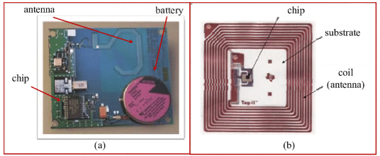 Disponível em: 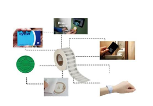 Disponível em: 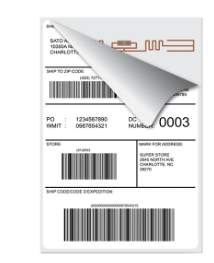 Disponível em:Quando o leitor RFID é ativado, ele gera um sinal de radiofrequência através de sua antena. Esse sinal é composto por ondas eletromagnéticas que se propagam pelo espaço. A frequência do sinal varia de acordo com o padrão utilizado (por exemplo, 125 kHz, 13,56 MHz ou 900 MHz ou até mesmo GHz).
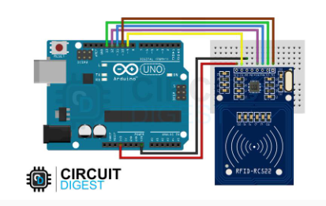 Disponível em: 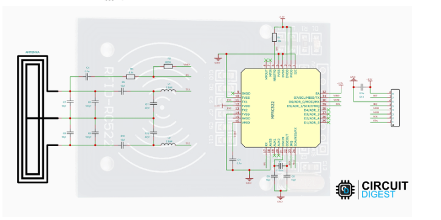 Disponível em:Quando uma etiqueta RFID está dentro do alcance do sinal do leitor, a antena da etiqueta capta o sinal de radiofrequência. Essa antena também atua como uma antena de recepção e é projetada para ressonar na frequência específica do sinal do leitor.
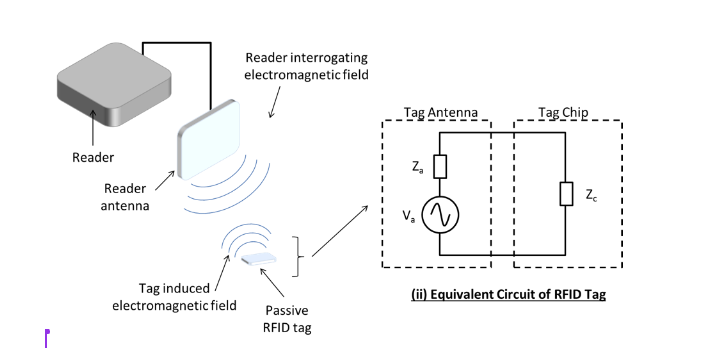 Disponível em: 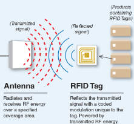 Disponível em:Nas etiquetas RFID passivas, a antena recebe energia do sinal do leitor. Quando o sinal de radiofrequência chega à antena da etiqueta, ocorre um fenômeno chamado acoplamento indutivo. O campo magnético do sinal induz uma corrente elétrica na antena da etiqueta, fornecendo energia para a etiqueta funcionar.
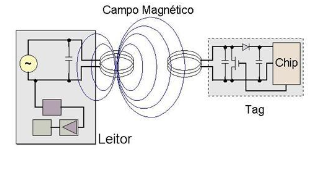 Disponível em:Com a energia fornecida, o microchip na etiqueta RFID é ativado. Ele começa a modular a corrente elétrica da antena para transmitir os dados armazenados na memória da etiqueta. Isso é feito por meio de um processo chamado modulação de amplitude (AM) ou modulação de fase (PM), dependendo da tecnologia utilizada.
A antena do leitor RFID capta a modulação do sinal transmitido pela etiqueta. Essa modulação é uma variação no campo magnético do sinal de radiofrequência recebido. O leitor converte essas variações em sinais elétricos correspondentes aos dados transmitidos pela etiqueta.
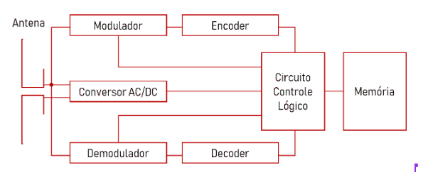 Disponível em:O leitor RFID envia os sinais elétricos dos dados recebidos para a unidade de controle. Essa unidade é responsável por decodificar e processar as informações, como o número de série da etiqueta ou outros dados específicos armazenados nela.
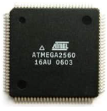 Disponível em:O sistema de software conectado ao leitor RFID recebe os dados processados e realiza as ações desejadas com base nessas informações. Isso pode incluir atualização de inventários, acionamento de alarmes, autenticação de produtos, entre outras funcionalidades.
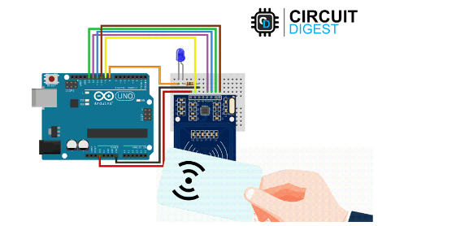 Disponível em:Em resumo, a comunicação no sistema RFID ocorre através da transmissão de um sinal de radiofrequência pelo leitor, o recebimento e a alimentação da etiqueta RFID pela energia do sinal, a transmissão dos dados pela etiqueta modulando a corrente elétrica da antena, o recebimento e processamento dos dados pelo leitor, e a interação com o sistema de software para a utilização das informações coletadas de acordo com uma lógica de controle para es.
Uma observação é que tecnologias que utilizam faixas de frequências maiores, se beneficiam do tamanho reduzido de antena, já que as ondas irão possuir comprimento de onda menores, sendo interessante para aplicações que requerem pequenas escalas. Por exemplo, uma antena que funciona na faixa de 60GHz, possui tamanho de cerca de 22 micrômetros, podendo caber em uma célula humana.